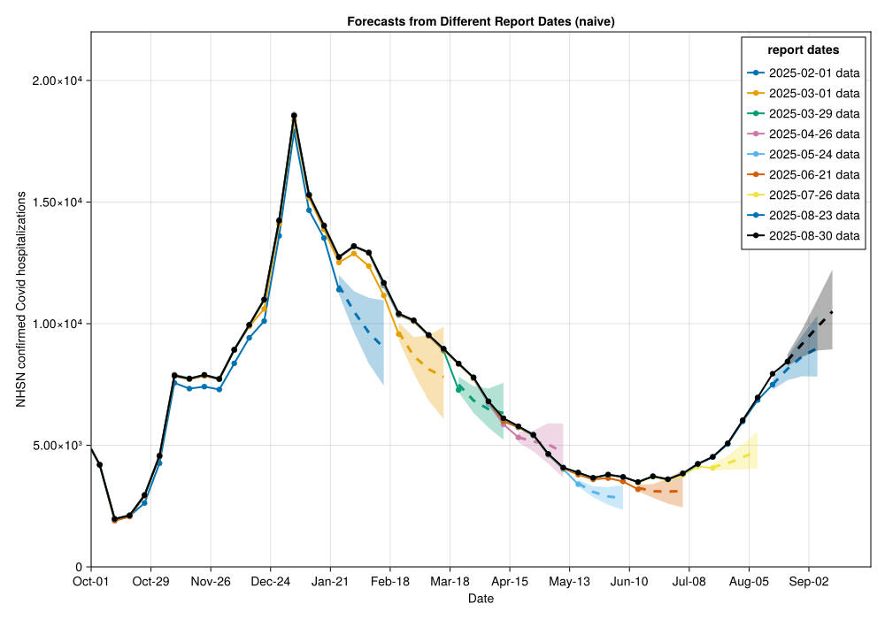

Getting Started with NowcastAutoGP
CDC Center for Forecasting and Outbreak Analytics (CFA/CDC)
Introduction
This tutorial demonstrates how to use NowcastAutoGP for epidemiological forecasting - making forecasts of future disease activity despite reporting delays making the latest data unreliable. This is a common challenge in public health surveillance where case reports arrive with delays. In this tutorial, we will want to forecast future weekly hospital admissions with confirmed Covid diagnosis despite uncertainty around the eventual value of recent admissions. The reason for the uncertainty is that despite eventually having a record of severe cases arriving in a given week (we call this the reference date), at any given reporting week (we call this the report date) recent reference dates will not have complete data.
What is Nowcasting?
Nowcasting is a form of forecasting aimed at the question: “What will be the eventual value of my time series, given recent reporting?”
From our perspective common applications are:
- COVID-19/Influenza/RSV hospital admissions
- COVID-19/Influenza/RSV Emergency department visits
- Real-time monitoring of reproductive numbers $R_t$
The purpose of NowcastAutoGP
The time series Gaussian process structure discovery and ensemble forecast package AutoGP.jl is highly impressive, but doesn’t include features for ingesting the kind of data we expect from a signal that needs significant nowcasting to become reliable.
NowcastAutoGP is an extension of AutoGP that uses AutoGP’s incremental inference features to include nowcasting results into the forecasting problem.
When forecasting a time series
\[X_T[1:T] = (X_{t,T})_{t=1:T}\]
on report date $T$ we split between data on a backwards horizon $D$ where we consider older data “confirmed”
\[X_T[1:(T-D)] = (X_{t,T})_{t=1:(T-D)}\]
that we don’t expect any further revision to; that is we expect that
\[X_T[1:(T-D)] = X_\infty[1:(T-D)].\]
The rest of the data we consider “unconfirmed” $X_T[(T-D+1):T]$ where we expect potentially significant future revisions and $X_T[(T-D+1):T] \neq X_\infty[(T-D+1):T]$.
Suppose, we have a nowcasting model that generates $K$ samples that forecast the eventual time series over the uncertain data period the $k$th sample being
\[X^{(k)}_\infty[(T-D+1):T] = (X^{(k)}_{t,\infty})_{t=(T-D+1):T};\]
for example by sampling from the posterior distribution. Then we can improve our AutoGP forecasting for the eventual value on reference date $f > T$ by replacing our “naive” forecast distribution:
\[\mathbb{P}(X_{f,\infty} | X_T[1:(T-D)], X_T[(T-D+1):T])\]
with the nowcast estimate for the uncertain data:
\[\mathbb{P}(X_{f,\infty} \mid X_T[1:(T-D)], X_\infty[(T-D+1):T]) = \frac{1}{K} \sum_k \mathbb{P}(X_{f,\infty} | X_T[1:(T-D)], X^{(k)}_\infty[(T-D+1):T])\]
This kind of forecasting is particularly convenient for AutoGP: we can use the standard end-to-end inference for the confirmed data and then batch over the sampled nowcasts using incremental inference.
Methodology overview
The main functions we offer for inference and forecasting are:
NowcastAutoGP.make_and_fit_model: This wrapsAutoGPfunctionality to make inference on the stable part of the time series data using sequential Monte Carlo (SMC) over sequences of data ingestion overn_particleSMC particles. Each particle represents a Gaussian process (GP) model for the time series, and at each data ingestion step this particle ensemble can be resampled. Within each SMC particle new possible GP kernel structures and hyperparmeter values are proposed using a specialised MCMC proposal distribution for structural choices (seeAutoGPoverview for details) and HMC for continuous parameter samples.NowcastAutoGP.forecast_with_nowcasts: This batches over proposed nowcasts for recent data, incrementally adding nowcast possible data to make forecasts before removing. The forecast distribution is the batch of forecasts over nowcasts of recent data.
Using NowcastAutoGP with NHSN hospitalisation data
Loading dependencies
using NowcastAutoGP
using CairoMakie
using Dates, Distributions, Random
using CSV, TidierData
# Set random seed for reproducibility
Random.seed!(123)
# Set CairoMakie output to png for quarto compat
CairoMakie.activate!(type = "png")Loading Surveillance Data
We are going to demonstrate using NowcastAutoGP for forecasting the CDC’s National Healthcare Safety Network (NHSN) reported Covid hospitalisations. We stored a vintaged data set locally.
datapath = joinpath(@__DIR__(), "data", "vintaged_us_nhsn_data.csv")
nhsn_vintage_covid_data = CSV.read(datapath, DataFrame)
# Add time_index column for plotting (1 = minimum date, 2 = next date, etc.)
unique_dates = sort(unique(nhsn_vintage_covid_data.reference_date))
d2index(d) = (d - minimum(unique_dates)).value
# Add time_index column using transform!
nhsn_vintage_covid_data = @mutate(nhsn_vintage_covid_data, time_index = d2index(reference_date))
@glimpse(nhsn_vintage_covid_data)Rows: 4102
Columns: 8
.reference_dateDates.Date 2022-10-01, 2022-10-01, 2022-10-01, 2022-10-01, 20
.report_date Dates.Date 2025-02-01, 2025-02-08, 2025-02-15, 2025-02-22, 20
.confirm Float64 26180.0, 26180.0, 26180.0, 26180.0, 26180.0, 26180
.max_confirm Float64 26150.0, 26150.0, 26150.0, 26150.0, 26150.0, 26150
.lag Int64 854, 861, 868, 875, 882, 889, 896, 903, 910, 917,
.multiplier Float64 0.9988540870893812, 0.9988540870893812, 0.99885408
.geo_value InlineStrings.String3us, us, us, us, us, us, us, us, us, us, us,
.time_index Int64 0, 0, 0, 0, 0, 0, 0, 0, 0, 0, 0, 0, 0, 0, 0, 0, 0,We see that the most recent report date, especially, is often revised upward eventually.
unique_report_dates = sort(unique(nhsn_vintage_covid_data.report_date))
# Select every 4th report date, but always include the latest one
selected_dates = unique_report_dates[1:4:end]
if unique_report_dates[end] ∉ selected_dates
selected_dates = vcat(selected_dates, unique_report_dates[end])
end
n_dates = length(selected_dates)
# Create figure
fig = Figure(size = (800, 600))
ax = Axis(fig[1, 1],
xlabel = "Reference Date",
ylabel = "NHSN confirmed Covid hospitalisations",
title = "Reference Date vs Confirm by Report Date (Oct 2024+, all US)"
)
# Generate colors - latest date will be black
colors = [i == n_dates ? :black : Makie.wong_colors()[mod1(i, 7)] for i in 1:n_dates]
# Plot each selected report date using time_index
for (report_date, color) in zip(selected_dates, colors)
date_data = @chain nhsn_vintage_covid_data begin
@filter(report_date == !!report_date)
@arrange(reference_date)
end
scatterlines!(ax, date_data.time_index, date_data.confirm,
color = color,
label = string(report_date),
markersize = 8,
linewidth = 2
)
end
# Set up custom x-axis with date strings
# Get date range for the plot and corresponding indices
plot_start_date = Date(2024, 10, 1)
plot_end_date = Date(2025, 10, 1)
# Create tick positions and labels (show every 4 weeks ≈ monthly)
tick_dates = range(plot_start_date, step = Week(4), length = 13)
# plot_start_date:Week(4):plot_end_date
tick_indices = d2index.(tick_dates)
tick_labels = [monthname(d)[1:3] * "-" * string(d)[(end-1):end] for d in tick_dates] # Show month-day
ax.xticks = (tick_indices, tick_labels)
# Add legend
axislegend(ax, "report dates"; position = :rt)
xlims!(ax, d2index(plot_start_date), d2index(plot_end_date))
ylims!(ax, 0, 2.2e4)
resize_to_layout!(fig)
figTraining data
We know that some recent periods have had bad reporting for NHSN, so we exclude them from the training data.
exclusion_periods = [(Date(2024, 5, 1), Date(2024, 6, 1)),
(Date(2024, 10, 1), Date(2024, 11, 15))]
training_data = let
function in_any_period(d)
in_periods = [d >= period[1] && d <= period[2] for period in exclusion_periods]
return ~any(in_periods)
end
@chain nhsn_vintage_covid_data begin
@filter(in_any_period(reference_date))
end
end
@glimpse(training_data)Rows: 3772
Columns: 8
.reference_dateDates.Date 2022-10-01, 2022-10-01, 2022-10-01, 2022-10-01, 20
.report_date Dates.Date 2025-02-01, 2025-02-08, 2025-02-15, 2025-02-22, 20
.confirm Float64 26180.0, 26180.0, 26180.0, 26180.0, 26180.0, 26180
.max_confirm Float64 26150.0, 26150.0, 26150.0, 26150.0, 26150.0, 26150
.lag Int64 854, 861, 868, 875, 882, 889, 896, 903, 910, 917,
.multiplier Float64 0.9988540870893812, 0.9988540870893812, 0.99885408
.geo_value InlineStrings.String3us, us, us, us, us, us, us, us, us, us, us,
.time_index Int64 0, 0, 0, 0, 0, 0, 0, 0, 0, 0, 0, 0, 0, 0, 0, 0, 0,Utility functions
We add two utility functions to this tutorial that wrap some NowcastAutoGP capabilities:
A fit_on_data function that does the core workflow on confirmed data:
- Transforms the time series into the unconstrained domain. We use an optimized Box-Cox transform to “normalize” the data.
- Redact some of the recent data, either for poor quality or in preparation for nowcasting.
- Passes to the
make_and_fit_modelfunction.
function fit_on_data(report_date;
n_redact,
max_ahead = 8,
date_data = date_data,
n_particles = 24,
smc_data_proportion = 0.1,
n_mcmc = 50, n_hmc = 50)
# Dates to forecast
forecast_dates = [maximum(date_data.reference_date) + Week(k) for k = 0:max_ahead]
transformation, inv_transformation = get_transformations("boxcox", date_data.confirm)
data_to_fit = create_transformed_data(date_data.reference_date[1:(end-n_redact)], date_data.confirm[1:(end-n_redact)]; transformation)
model = make_and_fit_model(data_to_fit;
n_particles,
smc_data_proportion,
n_mcmc, n_hmc)
return model, forecast_dates, transformation, inv_transformation
endWe also give a handy plotting utility for plotting our results.
function plot_with_forecasts(forecasts, title::String;
n_ahead,
selected_dates,
colors = colors,
covid_data = nhsn_vintage_covid_data,
plot_start_date = plot_start_date,
plot_end_date = plot_end_date,
y_lim_up = 2.2e4,
size = (1000, 700),
xticks = (tick_indices, tick_labels),
)
fig = Figure(size = size)
ax = Axis(fig[1, 1],
xlabel = "Date",
ylabel = "NHSN confirmed Covid hospitalizations",
title = title
)
# Plot forecasts
for (report_date, forecast, color) in zip(selected_dates, forecasts, colors)
date_data = @chain nhsn_vintage_covid_data begin
@filter(report_date == !!report_date)
@arrange(reference_date)
end
# Plot historical data as light lines
scatterlines!(ax, date_data.time_index, date_data.confirm,
color = color,
linewidth = 2,
label = "$(report_date) data"
)
# Extract quantiles for forecasts
q25 = forecast.iqrs[1:n_ahead, 1] # 25th percentile
median = forecast.iqrs[1:n_ahead, 2] # 50th percentile (median)
q75 = forecast.iqrs[1:n_ahead, 3] # 75th percentile
forecast_indices = d2index.(forecast.dates)[1:n_ahead]
# Plot uncertainty band (25%-75%)
band!(ax, forecast_indices, q25, q75,
color = (color, 0.3),
)
# Plot median forecast
lines!(ax, forecast_indices, median,
color = color,
linewidth = 3,
linestyle = :dash,
)
end
# Add legend
axislegend(ax, "report dates"; position = :rt)
# Limits
xlims!(ax, d2index(plot_start_date), d2index(plot_end_date))
ylims!(ax, 0, y_lim_up)
# Xticks
ax.xticks = xticks
# Return
resize_to_layout!(fig)
return fig
end
Forecasting
Approach 1: Forecasting naively
Naively, we could just use AutoGP on the latest reported data without considering revisions. This will be biased because we know that typically the most recent data will be revised upwards, but represents a common error when using this data stream.
n_forecasts = 2000
naive_forecasts_by_reference_date = map(selected_dates) do report_date
# Filter for correct report date
date_data = @chain training_data begin
@filter(report_date == !!report_date)
@arrange(reference_date)
end
model, forecast_dates, transformation, inv_transformation = fit_on_data(report_date;
n_redact = 0,
date_data = date_data,
)
forecasts = forecast(model, forecast_dates, n_forecasts; inv_transformation)
iqr_forecasts = mapreduce(vcat, eachrow(forecasts)) do fc
qs = quantile(fc, [0.25, 0.5, 0.75])
qs'
end
return (dates = forecast_dates, forecasts = forecasts, iqrs = iqr_forecasts)
endWhen we plot we see that the unrevised data consistently underestimates the eventual counts, which leads to poor forecasting.
plot_with_forecasts(naive_forecasts_by_reference_date, "Forecasts from Different Report Dates (naive)";
n_ahead = 4,
selected_dates = selected_dates,
)
Approach 2: Removing uncertain data
We note that the problem is mainly with the most recent week of hospitalisation reports. Therefore, another strategy could be to simply redact that week but otherwise leave out forecasting untouched.
leave_out_last_forecasts_by_reference_date = map(selected_dates) do report_date
date_data = @chain training_data begin
@filter(report_date == !!report_date)
@arrange(reference_date)
end
model, forecast_dates, transformation, inv_transformation = fit_on_data(report_date;
n_redact = 1, # Ignore last week of data
date_data = date_data,
)
forecasts = forecast(model, forecast_dates, n_forecasts; inv_transformation)
iqr_forecasts = mapreduce(vcat, eachrow(forecasts)) do fc
qs = quantile(fc, [0.25, 0.5, 0.75])
qs'
end
return (dates = forecast_dates, forecasts = forecasts, iqrs = iqr_forecasts)
endThis looks improved but the forecasts have quite large prediction intervals (we have effectively bumped the forecast horizon by one week).
plot_with_forecasts(leave_out_last_forecasts_by_reference_date, "Forecasts from Different Report Dates (Leave out last week)";
n_ahead = 4,
selected_dates = selected_dates,
)
Approach 3: Forecasting with a simple nowcast
Now lets consider a really simple nowcasting model. Over recent vintages we notice that the most recent week gets revised significantly but other weeks are fairly stable. Therefore, we fit the ratio of last weeks report to last weeks eventual reported to a LogNormal. The MLE fit for this was LogNormal(logmean = 0.1, logstd = 0.027).
In the following example, for each vintage we first fit to all the data except the most recent week (n_redact = 1). Second, we sample a multiplier for the most recent week from the LogNormal distribution 100 times. Third, we use forecast_with_nowcasts to batch 20 forecasts per nowcast signal ontop of the inference done in step one.
This is a very simple nowcasting approach! Note that cached nowcasts from a more sophisticated approach, such as a full generative model defined by e.g. epinowcast or baselinenowcast, could have been deserialized into this approach.
n_nowcast_samples = 100
nowcast_forecasts_by_reference_date = map(selected_dates) do report_date
# Filter for correct report date
date_data = @chain training_data begin
@filter(report_date == !!report_date)
@arrange(reference_date)
end
# Fit on all accepted data
model, forecast_dates, transformation, inv_transformation = fit_on_data(report_date;
n_redact = 1,
date_data = date_data,
)
# Simple nowcast on most recent data where we suspect significant revisions
nowcast_samples = [[date_data.confirm[end] * exp(0.1 + randn() * 0.027)] for _ = 1:n_nowcast_samples]
nowcasts = create_nowcast_data(nowcast_samples, [date_data.reference_date[end]];
transformation = transformation)
forecasts = forecast_with_nowcasts(model, nowcasts, forecast_dates, n_forecasts ÷ n_nowcast_samples ; inv_transformation)
iqr_forecasts = mapreduce(vcat, eachrow(forecasts)) do fc
qs = quantile(fc, [0.25, 0.5, 0.75])
qs'
end
return (dates = forecast_dates, forecasts = forecasts, iqrs = iqr_forecasts)
endWe see that this significantly improves the forecasting visually.
plot_with_forecasts(nowcast_forecasts_by_reference_date, "Forecasts from Different Report Dates (Simple Nowcast)";
n_ahead = 4,
selected_dates = selected_dates,
)
Scoring
To evaluate the quality of our different forecasting approaches, we use proper scoring rules. A proper scoring rule is a function that assigns a numerical score to a probabilistic forecast, with the property that the score is optimized (in expectation) when the forecast distribution matches the true future data distribution.
The Continuous Ranked Probability Score (CRPS) is a proper scoring rule that generalizes the absolute error to probabilistic forecasts. For a forecast distribution $F(x) = P(X \leq x)$ and observed outcome $y$, the CRPS is defined as:
\[\text{CRPS}(X, y) = \mathbb{E}[|X - y|] - \frac{1}{2}\mathbb{E}[|X_1 - X_2|]\]
where the first term measures the distance between the forecast ensemble and the observation, and the second term measures the spread of the forecast ensemble.
For a forecast ensemble $X = \{X_1, X_2, \ldots, X_n\}$, this can be estimated using an empirical sum.
Note: For production forecasting evaluation, we recommend using the comprehensive scoringutils R package, which provides robust implementations of proper scoring rules, forecast evaluation diagnostics, and visualization tools specifically designed for epidemiological forecasting.
Let’s implement a simple CRPS function and functions for getting the mean CRPS score over reporting dates and forecast horizons in order to compare our three forecasting approaches:
function crps(y::Real, X::Vector{<:Real})
n = length(X)
# First term: E|X - y|
term1 = mean(abs.(X .- y))
# Second term : E|X_1 - X_2|
# Calculate all ordered pairwise differences
ordered_pairwise_diffs = [abs(X[i] - X[j]) for i in 1:n for j in (i+1):n]
term2 = mean(ordered_pairwise_diffs) #Average value is same as going over all combinations and div by n^2 due to zero diagonal and permutation symmetry
# CRPS = E|X - y| - 0.5 * E|X_1 - X_2|
return term1 - 0.5 * term2
end
function score_forecast(latestdata, forecast_dates, F; max_horizon = 4, data_transform = x -> x)
@assert max_horizon <= length(forecast_dates) "Not enough data to score full horizon"
score_dates = forecast_dates[1:max_horizon]
scorable_data = @filter(latestdata, reference_date in !!score_dates)
S = mapreduce(+, scorable_data.confirm[1:max_horizon], eachrow(F.forecasts[1:max_horizon, :])) do y, X #Iterate over forecast dates
crps(data_transform(y), data_transform.(X))
end
return S / max_horizon
end
function score_all_forecasts(latestdata, forecasts; max_horizon = 4, data_transform = x -> x)
total_score = mapreduce(+, forecasts; init = 0.0) do F # iterate over forecasts
forecast_dates = F.dates
score_forecast(latestdata, forecast_dates, F; max_horizon, data_transform)
end
return total_score / length(forecasts)
endWe can apply the scoring to each forecasting method, leaving out the most recent forecasts (where we don’t have all the data to score them).
most_recent_report_date = maximum(selected_dates)
latestdata = @filter(nhsn_vintage_covid_data, report_date == !!most_recent_report_date)
scores = map([naive_forecasts_by_reference_date, leave_out_last_forecasts_by_reference_date, nowcast_forecasts_by_reference_date]) do F
score_all_forecasts(latestdata, F[1:(end-2)]; data_transform = identity)
endThen we can plot these scores as score ratios relative to the simple nowcasting approach.
# Calculate score ratios compared to simple nowcast (baseline)
baseline_score = scores[3] # Simple nowcast score
score_ratios = [score / baseline_score for score in scores]
# Create bar plot comparing score ratios
method_names = ["Naive", "Leave Out Last", "Simple Nowcast"]
fig = Figure(size = (600, 400))
ax = Axis(fig[1, 1],
xlabel = "Forecasting Method",
ylabel = "Score Ratio (lower is better)",
title = "Forecast Performance: Score Ratios vs Simple Nowcast"
)
# Create bar plot with different colors based on performance
bar_colors = [ratio > 1 ? :red : ratio == 1 ? :green : :blue for ratio in score_ratios]
barplot!(ax, 1:3, score_ratios,
color = bar_colors,
alpha = 0.7,
strokewidth = 2,
strokecolor = :black)
# Add value labels on top of bars
for (i, ratio) in enumerate(score_ratios)
text!(ax, i, ratio + 0.02, text = string(round(ratio, digits=2)),
align = (:center, :bottom), fontsize = 12)
end
# Add horizontal line at y=1 for reference (baseline)
hlines!(ax, [1], color = :black, linestyle = :dash, linewidth = 1)
# Set x-axis labels
ax.xticks = (1:3, method_names)
ax.xticklabelrotation = π/4
# Add some padding to y-limits
y_max = maximum(score_ratios)
ylims!(ax, 0.8, y_max + 0.1)
resize_to_layout!(fig)
fig
Results and Interpretation
The score ratios clearly show the improvement over this tutorial:
Naive forecasting performs worst - The score ratio shows that naive forecasting is significantly worse than the nowcast baseline (ratio > 1), demonstrating that using the most recent reported data without any adjustment for reporting delays leads to systematically poor forecast accuracy. This approach fails to account for the known issue that recent hospitalizations are significantly under-reported.
Leaving out the last week shows intermediate performance - This approach achieves a score ratio between the naive method and the baseline, indicating improved performance over naive forecasting but still worse than nowcasting. While excluding the most recent (and most uncertain) week removes problematic reporting delays, it effectively increases our forecast horizon by one week, leading to increased uncertainty in predictions.
Simple nowcasting provides the baseline performance - By definition, the simple nowcasting approach has a score ratio of 1.0, serving as our reference point. Even this basic nowcasting approach (using a simple log-normal multiplier for the most recent week) substantially outperforms both alternatives, demonstrating the value of explicitly modelling reporting delays rather than simply ignoring uncertain data.
These results support the core motivation for NowcastAutoGP - that combining nowcasting with sophisticated time series modeling can significantly improve forecast accuracy in real-world surveillance scenarios where reporting delays are common. The score ratios provide a clear, interpretable metric showing the improvement that nowcasting provides over simpler alternatives.